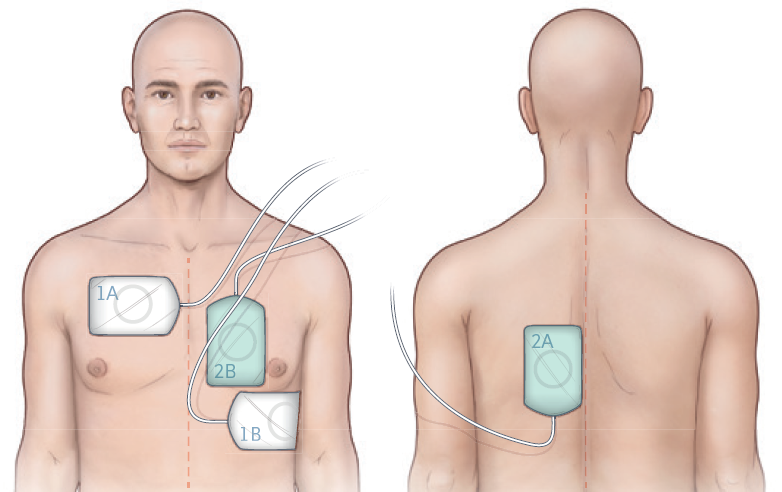

NB: Tactile hand taps are an important and necessary safety feature to minimise risk of accidental shock to rescuers and is a MANDATORY component of IMPACT CPR.
Double sequential defibrillation (DSED) is the instance of two sequential (<1 second apart) shocks using two sets of pads and two monitors with the pads in the anterior/lateral and anterior/posterior placement. One person who is trained and authorised must discharge both defibrillators sequentially.
Safety considerations:

Defibrilator pad placement:
1A/1B: Antero-lateral (standard) placement
2A/2B: Antero-posterior placement
| Settings | |
|---|---|
| Extended Care: | |
| Colour assist: | |
St John Ambulance Western Australia Ltd (ABN 55 028 468 715) (St John WA) operates ambulance and other pre-hospital clinical services. St John WA’s Clinical Resources, including its Clinical Practice Guidelines (Clinical Resources), are intended for use by credentialed St John WA staff and volunteers when providing clinical care to patients for or on behalf of St John WA, within the St John WA Clinical Governance Framework, and only to the extent of the clinician’s authority to practice.
The content of the St John WA Clinical Resources is provided for information purposes only and is not intended to serve as health, medical or treatment advice. Any user of this website agrees to be bound by these Terms of Use in their use of the Clinical Resources.
St John WA does not represent or warrant (whether express, implied, statutory, or otherwise) that the content of the Clinical Resources is accurate, reliable, up-to-date, complete or that the information contained is suitable for your needs or for any particular purpose. You are responsible for assessing whether the information is accurate, reliable, up-to-date, authentic, relevant, or complete and where appropriate, seek independent professional advice.
St John WA expressly prohibits use of these Clinical Resources to guide clinical care of patients by organisations external to St John WA, except where these organisations have been directly engaged by St John WA to provide services. Any use of the Clinical Resources, with St John WA approval, must attribute St John WA as the creator of the Clinical Resources and include the copyright notice and (where reasonably practicable) provide a URL/hyperlink to the St John WA Clinical Resources website.
No permission or licence is granted to reproduce, make commercial use of, adapt, modify or create derivative works from these Clinical Resources. For permissions beyond the scope of these Terms of Use, including a commercial licence, please contact medservices@stjohnambulance.com.au
Where links are provided to resources on external websites, St John WA:
Your use of any external website is governed by the terms of that website, including any authorisation, requirement or licence for use of the material on that website.
To the maximum extent permitted by law, St John WA excludes liability (including liability in negligence) for any direct, special, indirect, incidental, consequential, punitive, exemplary or other loss, cost, damage or expense arising out of, or in connection with, use or reliance on the Clinical Resources (including without limitation any interference with or damage to a user’s computer, device, software or data occurring in connection with such use).
Please read this cookie policy carefully before using Clinical Resources from St John WA.
The cookies used on this site are small and completely anonymous pieces of information and are stored on your computer or mobile device. The data that the cookies contain identify your user preferences (such as your preferred text size, scope / skill level preference and Colour Assist mode, among other user settings) so that they can be recalled the next time that you visit a page within Clinical Resources. These cookies are necessary to offer you the best and most efficient possible experience when accessing and navigating through our website and using its features. These cookies do not collect or send analytical information back to St John WA.
Clinical Resources does integrate with Google Analytics and any cookies associated with this service enable us (and third-party services) to collect aggregated data for statistical purposes on how our visitors use this website. These cookies do not contain personal information such as names and email addresses and are used to help us improve your user experience of the website.
If you want to restrict or block the cookies that are set by our website, you can do so through your browser setting. Alternatively, you can visit www.internetcookies.com, which contains comprehensive information on how to do this on a wide variety of browsers and devices. You will find general information about cookies and details on how to delete cookies from your device. If you have any questions about this policy or our use of cookies, please contact us.
{kind=link}
{kind=link}
{kind=link}